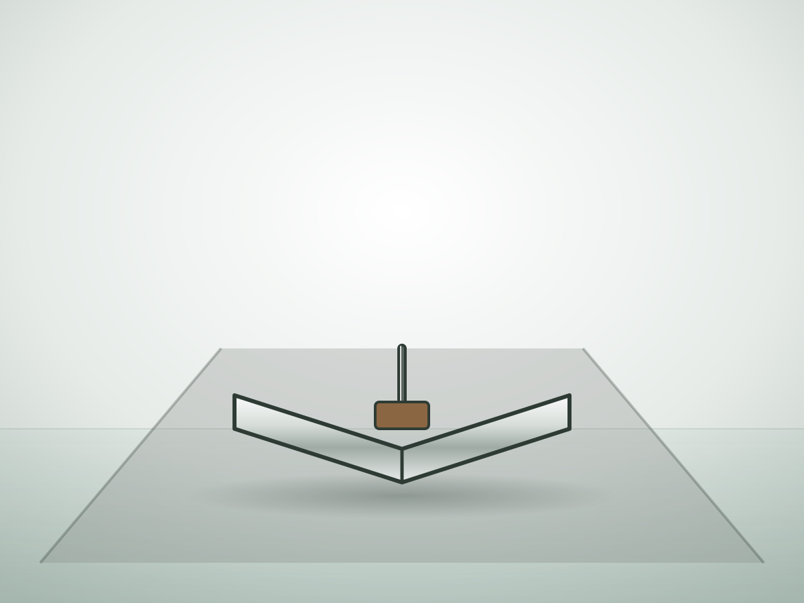

Навозоудаление
Полная цепочка: уборка из проходов, перекачка, перемешивание и разделение навоза на фракции.
Полная цепочка: уборка из проходов, перекачка, перемешивание и разделение навоза на фракции.
Перекачивают жидкий навоз из приямков в лагуну или цистерну. Погружные — для каналов, шнековые — для густой массы.
Перемешивают навоз в хранилище перед откачкой, чтобы не оседала корка и не забивались насосы.
Дельта-скреперы для проходов с решётчатым и сплошным полом. Складываются на обратном ходу и не мешают коровам.

Приводят скреперы в движение по расписанию. Один привод обслуживает до двух проходов.
Разделяют навоз на жидкую и твёрдую фракции. Твёрдая идёт на подстилку или компост, жидкая — на поля.
Скребковые транспортёры для привязного содержания: убирают навоз из каналов и грузят в прицеп.